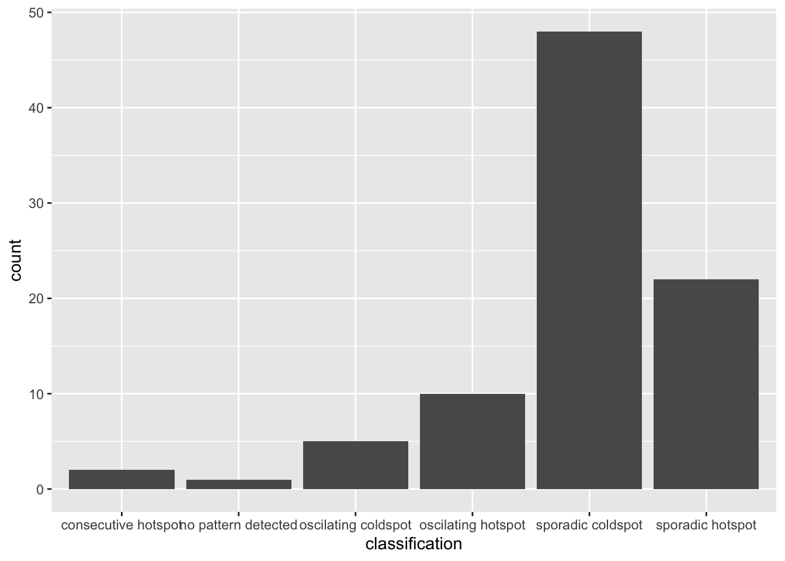
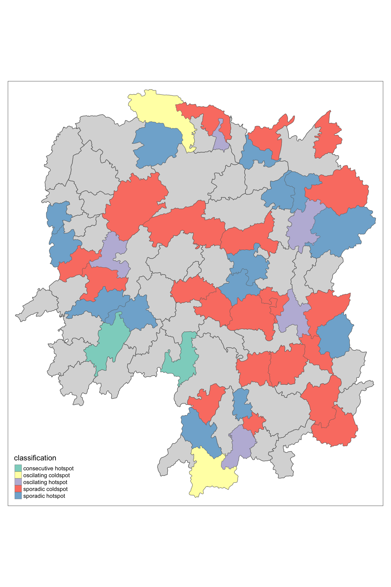

pacman::p_load(sf, sfdep, tmap, plotly, tidyverse)In-class Exercise 6: Emerging Hot Spot Analysis
1 Overview
Emerging Hot Spot Analysis (EHSA) is a spatio-temporal analysis method for revealing and describing how hot spot and cold spot areas evolve over time. The analysis consist of four main steps:
- Building a space-time cube,
- Calculating Getis-Ord local Gi* statistic for each bin by using an FDR correction,
- Evaluating these hot and cold spot trends by using Mann-Kendall trend test,
- Categorising each study area location by referring to the resultant trend z-score and p-value for each location with data, and with the hot spot z-score and p-value for each bin.
2 The Data
We will use following geospatial datasets in this exercise:
| Dataset | Description | Format |
|---|---|---|
| Hunan | Hunan county boundary layer geospatial data | ESRI shapefile |
| Hunan_GDPPC | Contains Hunan’s historical GDPPC data. | CSV file |
3 Installing and launching the R packages
We will use following packages in this exercise:
| Package | Description |
|---|---|
| sf | Provides functions to manage, processing, and manipulate Simple Features, a formal geospatial data standard that specifies a storage and access model of spatial geometries such as points, lines, and polygons. |
| sfdep | Provides collection of functions to create spatial weights matrix objects from polygon ‘contiguities’, from point patterns by distance and tessellations. |
| tidyverse | Provides collection of functions for performing data science task such as importing, tidying, wrangling data and visualising data. |
| tmap | Provides functions for plotting cartographic quality static point patterns maps or interactive maps by using leaflet API |
To install and launch the four R packages.
4 Data Import and Preparation
4.1 Loading the data
In this section, we will learn how to bring a geospatial data and its associated attribute table into R environment. The geospatial data is in ESRI shapefile format and the attribute table is in csv fomat.
We use st_read() of sf package to import Hunan shapefile into R. The imported shapefile will be simple features Object of sf.
hunan <- st_read(dsn = "data/geospatial",
layer = "Hunan")Reading layer `Hunan' from data source
`/Users/cham/project/Geospatial-Analytics/chrismanafe/ISSS626-GAA/in_class_ex/in_class_ex06/data/geospatial'
using driver `ESRI Shapefile'
Simple feature collection with 88 features and 7 fields
Geometry type: POLYGON
Dimension: XY
Bounding box: xmin: 108.7831 ymin: 24.6342 xmax: 114.2544 ymax: 30.12812
Geodetic CRS: WGS 84Rows: 88
Columns: 8
$ NAME_2 <chr> "Changde", "Changde", "Changde", "Changde", "Changde", "Cha…
$ ID_3 <int> 21098, 21100, 21101, 21102, 21103, 21104, 21109, 21110, 211…
$ NAME_3 <chr> "Anxiang", "Hanshou", "Jinshi", "Li", "Linli", "Shimen", "L…
$ ENGTYPE_3 <chr> "County", "County", "County City", "County", "County", "Cou…
$ Shape_Leng <dbl> 1.869074, 2.360691, 1.425620, 3.474325, 2.289506, 4.171918,…
$ Shape_Area <dbl> 0.10056190, 0.19978745, 0.05302413, 0.18908121, 0.11450357,…
$ County <chr> "Anxiang", "Hanshou", "Jinshi", "Li", "Linli", "Shimen", "L…
$ geometry <POLYGON [°]> POLYGON ((112.0625 29.75523..., POLYGON ((112.2288 …Then we will import Hunan_2012.csv into R by using read_csv() of readr package. The output is R dataframe class.
GDPPC <- read_csv("data/aspatial/Hunan_GDPPC.csv")Rows: 1496 Columns: 3
── Column specification ────────────────────────────────────────────────────────
Delimiter: ","
chr (1): County
dbl (2): Year, GDPPC
ℹ Use `spec()` to retrieve the full column specification for this data.
ℹ Specify the column types or set `show_col_types = FALSE` to quiet this message.Rows: 1,496
Columns: 3
$ Year <dbl> 2005, 2005, 2005, 2005, 2005, 2005, 2005, 2005, 2005, 2005, 200…
$ County <chr> "Longshan", "Changsha", "Wangcheng", "Ningxiang", "Liuyang", "Z…
$ GDPPC <dbl> 3469, 24612, 14659, 11687, 13406, 8546, 10944, 8040, 7383, 1168…In the code chunk below, spacetime() of sfdep is used to create an spatio-temporal cube.
GDPPC_st <- spacetime(GDPPC, hunan,
.loc_col = "County",
.time_col = "Year")Next, we will use is_spacetime_cube() of sfdep package to verify if GDPPC_st is indeed an space-time cube object.
is_spacetime_cube(GDPPC_st)[1] TRUEThe result confirms that GDPPC_st object is indeed an time-space cube.
5 Hot spot and cold spot area analysis
5.1 Computing local Gi* statistics
Next, we will compute the local Gi* statistics.
5.1.1 Deriving the spatial weights
As with most spatial analyses, we first need to derive a spatial weight matrix before computing the local Gi* statistics. The code chunk below demonstrates how to derive a spatial weight matrix using functions from the sfdep package, combined with the tidyverse approach.
GDPPC_nb <- GDPPC_st %>%
activate("geometry") %>%
mutate(nb = include_self(st_contiguity(geometry)),
wt = st_inverse_distance(nb, geometry,
scale = 1,
alpha = 1),
.before = 1) %>%
set_nbs("nb") %>%
set_wts("wt")! Polygon provided. Using point on surface.Warning: There was 1 warning in `stopifnot()`.
ℹ In argument: `wt = st_inverse_distance(nb, geometry, scale = 1, alpha = 1)`.
Caused by warning in `st_point_on_surface.sfc()`:
! st_point_on_surface may not give correct results for longitude/latitude data
activate()of dplyr package is used to activate the geometry contextmutate()of dplyr package is used to create two new columns nb and wt.- Then we will activate the data context again and copy over the nb and wt columns to each time-slice using
set_nbs()andset_wts()
- row order is very important so do not rearrange the observations after using
set_nbs()orset_wts().
5.1.2 Compute Gi*
We can manually calculate the local Gi* for each location using the new columns. This is done by grouping the data by Year and applying the local_gstar_perm() function from the sfdep package. Afterward, we can use unnest() to unnest the gi_star column from the newly created gi_stars data frame.
gi_stars <- GDPPC_nb %>%
group_by(Year) %>%
mutate(gi_star = local_gstar_perm(
GDPPC, nb, wt)) %>%
tidyr::unnest(gi_star)5.2 Mann-Kendall Test
A monotonic series or function is one that only increases or decreases and never changes direction. As long as the function either stays flat or continues to increase (or decrease), it is considered monotonic.
H₀ (Null Hypothesis): There is no monotonic trend.
H₁ (Alternative Hypothesis): A monotonic trend is present.
Interpretation:
Reject the null hypothesis (H₀) if the p-value is smaller than the alpha level (i.e., 1 - confidence level).
Tau (τ) ranges between -1 and 1, where:
-1 represents a perfectly decreasing series.
1 represents a perfectly increasing series.
5.2.1 Mann-Kendall Test on Gi
With these Gi* measures we can then evaluate each location for a trend using the Mann-Kendal test. Let’s use it on Changsha county.
cbg <- gi_stars %>%
ungroup() %>%
filter(County == "Changsha") |>
select(County, Year, gi_star)5.2.2 Visualize Mann-Kendall Test Result
Next, we plot the result by using ggplot2 functions.
ggplot(data = cbg,
aes(x = Year,
y = gi_star)) +
geom_line() +
theme_light()
We can also create an interactive plot by using ggplotly() of plotly package.
p <- ggplot(data = cbg,
aes(x = Year,
y = gi_star)) +
geom_line() +
theme_light()
ggplotly(p)5.2.3 Print Mann-Kendall test report
cbg %>%
summarise(mk = list(
unclass(
Kendall::MannKendall(gi_star)))) %>%
tidyr::unnest_wider(mk)# A tibble: 1 × 5
tau sl S D varS
<dbl> <dbl> <dbl> <dbl> <dbl>
1 0.485 0.00742 66 136. 589.In the above result, sl is the p-value. With reference to the results, we will reject the null hypothesis and infer there’s a slight upward trend.
5.2.4 Mann-Kendall test data.frame
We can replicate this for each location by using group_by() of dplyr package.
ehsa <- gi_stars %>%
group_by(County) %>%
summarise(mk = list(
unclass(
Kendall::MannKendall(gi_star)))) %>%
tidyr::unnest_wider(mk)
head(ehsa)# A tibble: 6 × 6
County tau sl S D varS
<chr> <dbl> <dbl> <dbl> <dbl> <dbl>
1 Anhua 0.191 0.303 26 136. 589.
2 Anren -0.294 0.108 -40 136. 589.
3 Anxiang 0 1 0 136. 589.
4 Baojing -0.691 0.000128 -94 136. 589.
5 Chaling -0.0882 0.650 -12 136. 589.
6 Changning -0.750 0.0000318 -102 136. 589.5.2.4.1 Arrange significant emerging hot/cold spots
We can also sort to show significant hot spots using following code chunk.
emerging <- ehsa %>%
arrange(sl, abs(tau)) %>%
slice(1:10)
emerging# A tibble: 10 × 6
County tau sl S D varS
<chr> <dbl> <dbl> <dbl> <dbl> <dbl>
1 Shuangfeng 0.868 0.00000143 118 136. 589.
2 Xiangtan 0.868 0.00000143 118 136. 589.
3 Xiangxiang 0.868 0.00000143 118 136. 589.
4 Chengbu -0.824 0.00000482 -112 136. 589.
5 Dongan -0.824 0.00000482 -112 136. 589.
6 Wugang -0.809 0.00000712 -110 136. 589.
7 Huayuan -0.794 0.0000105 -108 136. 589.
8 Shaoshan 0.794 0.0000105 108 136. 589.
9 Liuyang 0.779 0.0000153 106 136. 589.
10 Zhuzhou 0.765 0.0000221 104 136. 589.5.2.5 Performing Emerging Hotspot Analysis
Lastly, we will perform EHSA analysis by using emerging_hotspot_analysis() of sfdep package. It takes a spacetime object x (i.e. GDPPC_st), and the quoted name of the variable of interest (i.e. GDPPC) for .var argument. The k argument is used to specify the number of time lags which is set to 1 by default. Lastly, nsim map numbers of simulation to be performed.
ehsa <- emerging_hotspot_analysis(
x = GDPPC_st,
.var = "GDPPC",
k = 1,
nsim = 99
)5.2.6 Visualising the distribution of EHSA classes
We’ll visualise the distribution of EHSA classes using ggplot2 functions.
ggplot(data = ehsa,
aes(x = classification)) +
geom_bar()
The figure above shows that sporadic cold spots class has the high numbers of county.
5.2.7 Visualising EHSA
In this section, we will visualise the geographic distribution EHSA classes. However, before we can do so, we need to join both hunan and ehsa together by using the code chunk below.
hunan_ehsa <- hunan %>%
left_join(ehsa,
by = join_by(County == location))Next, tmap functions will be used to plot a categorical choropleth map by using the code chunk below.
ehsa_sig <- hunan_ehsa %>%
filter(p_value < 0.05)
tmap_mode("plot")tmap mode set to plottingtm_shape(hunan_ehsa) +
tm_polygons() +
tm_borders(alpha = 0.5) +
tm_shape(ehsa_sig) +
tm_fill("classification") +
tm_borders(alpha = 0.4)Warning: One tm layer group has duplicated layer types, which are omitted. To
draw multiple layers of the same type, use multiple layer groups (i.e. specify
tm_shape prior to each of them).
6 Reference
Kam, T. S. Emerging Hot Spot Analysis. ISSS626 Geospatial Analytics and Applications. https://isss626-ay2024-25aug.netlify.app/in-class_ex/in-class_ex06/in-class_ex06